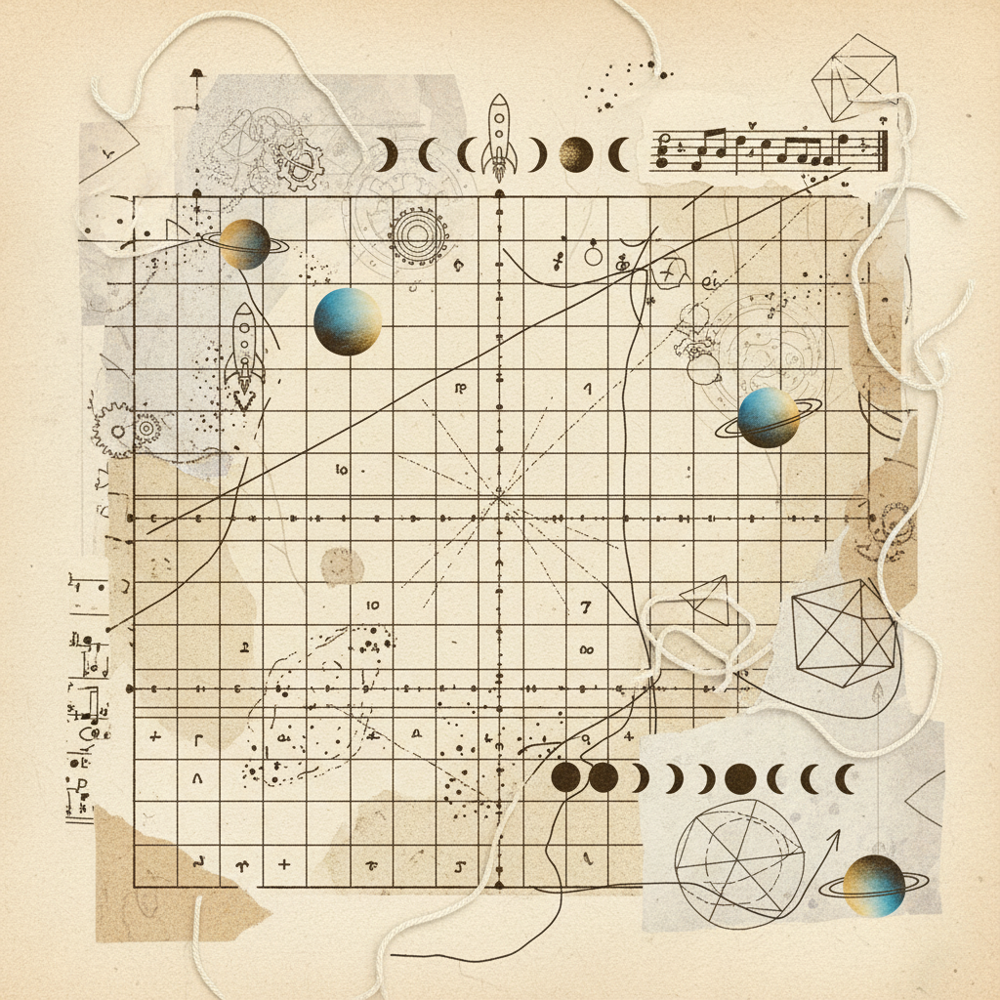

Subject
MTU-772 Somatic Archive
Status
Peer Review Pending
Access
Classified Scholar
Comparative Seminar Essay
Synthesize your observations through the dual lens of phenomenology and ritual theory. Address the tension between the spontaneous somatic impulse and the rigid container of liturgical form.
In what ways did the suspension of judgment (epoché) alter your perception of the relational field during the silent ritual?
Discuss the liminal transition between mundane activity and sacred focus. Identify the exact somatic trigger that signaled the threshold crossing.
Practice-as-Data (N=1 Mixed Methods Design)
The objective of this tracking phase is to convert subjective somatic experiences into a longitudinal dataset. Participants are required to maintain a consistent log of autonomic shifts and relational dynamics over a 14-day cycle.
Somatic Variables
Heart rate variability, respiratory depth, and visceral tension (psoas/jaw).
Relational Variables
Proximity tolerance, gaze-holding duration, and verbal boundary clarity.

Rubric for Instructor Feedback
| Criteria | 0 — Deficient | 1 — Basic | 2 — Proficient | 3 — Advanced | 4 — Mastery |
|---|---|---|---|---|---|
| Somatic Noticing Precision in articulating visceral state changes. | Anecdotal | Broad | Localized | Systemic | Fluid |
| Boundary Language Clarity of interpersonal navigation. | Passive | Emergent | Consistent | Nuanced | Generative |
| Analytic Synthesis Integration of theory and practice. | Disconnected | Literal | Relational | Architectural | Transcendent |